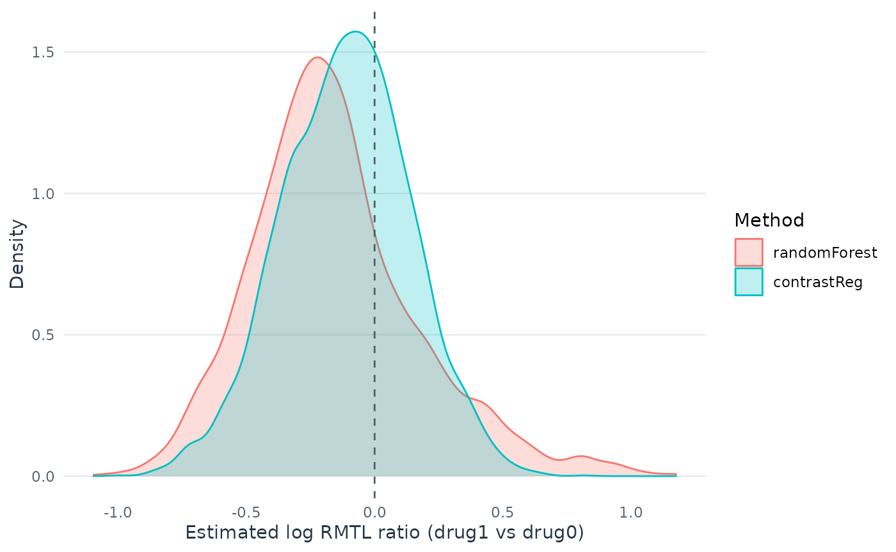
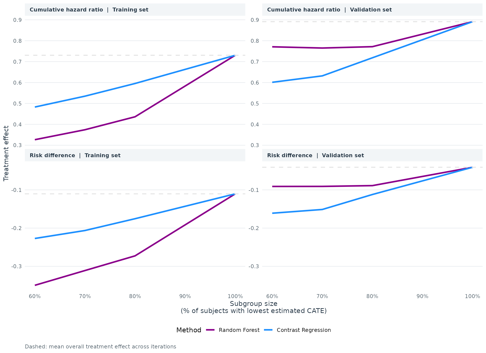
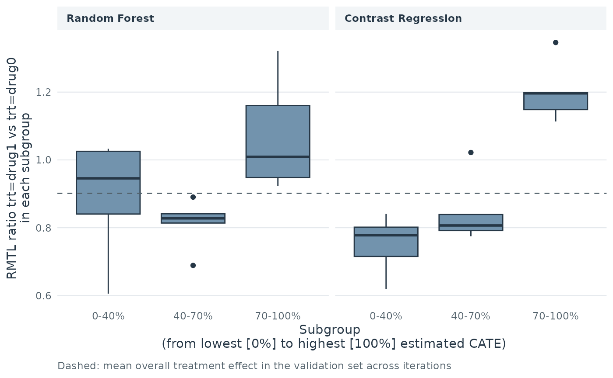

CATE scores and validation for survival outcomes
Source:vignettes/Survival-CATE.Rmd
Survival-CATE.RmdThis vignette fits and internally validates conditional treatment-effect scores for survival outcomes. The companion ATE example estimates the population-average effect using the same data. Score fitting and validation are distinct; estimated subgroups from the fitting sample are not independent validation.
Prepare the data
library(precmed)
library(dplyr)
library(ggplot2)
library(survival)
survival_data <- simulate_survival(n = 4000, seed = 20261114)The synthetic data record time to first relapse or censoring.
Estimate CATE scores
Chapter 17 describes treatment effect heterogeneity and CATE prediction (Hoogland et al. 2026). In this example, scores are on the log-RMTL-ratio scale, so exponentiating a score gives an estimated conditional RMTL ratio. Lower scores indicate greater estimated benefit from drug 1. Fitting scores on the full dataset does not establish their performance in new patients.
A population-average effect may vary across patients. We fit
conditional average treatment effect (CATE) scores to rank patients by
estimated treatment effect. catefit() fits scores and
estimates score-defined subgroup effects on the full dataset; internal
validation is discussed below.
Restricted mean time lost (RMTL) is the horizon minus the mean
event-free time up to that horizon. The scores compare RMTL under drug 1
with RMTL under drug 0, conditional on covariates. We first choose the
horizon tau0: for this illustration, it is the smaller of
the 95th percentiles of observed follow-up in the two treatment groups,
as in the companion ATE example.
tau0 <- with(survival_data,
min(quantile(y[trt == "drug1"], 0.95),
quantile(y[trt == "drug0"], 0.95)))
tau0
#> [1] 778.4532This choice uses observed times, including censoring, and does not guarantee adequate follow-up. In practice, choose a clinically meaningful horizon and inspect numbers at risk and censoring near it in both groups.
Specify the outcome, treatment and censoring models
The outcome formula uses Surv(y, d) for observed
follow-up and the event indicator, with baseline covariates on the
right. Outcome models are fitted separately by treatment arm, so
treatment is not included in this formula. The treatment-model formula
puts treatment on the left and baseline covariates on the right; it
estimates propensity scores, the conditional probabilities of receiving
treatment. The treatment labels drug0 and
drug1 are recoded to 0 and 1. In a randomized trial, an
intercept-only treatment model can reflect a common assignment
probability.
Both formulas are needed because the doubly robust scores and
subgroup effect estimates combine outcome predictions and propensity
scores. T-learner scores use outcome predictions alone, but the
treatment model is still used for the subgroup estimates reported by
catefit(). Survival estimation also uses a censoring model
to supply probabilities for inverse probability of censoring weighting
(IPCW). Here the default censoring model uses the outcome-model
covariates; see ?catefit for alternatives.
outcome_formula <- survival::Surv(y, d) ~ age + female +
previous_cost + previous_number_relapses
ps_formula <- trt ~ age + previous_treatmentChoose how to construct scores
If both method arguments are omitted, catefit() defaults
to a T-learner with outcome_method = "coxph" for this
outcome.
benefit_method selects the score-construction approach,
while outcome_method selects the outcome-model method for
each score:
- A T-learner fits an outcome model in each treatment
arm and compares predicted restricted mean time lost. Available outcome
methods include Poisson, boosting, random forests, Cox proportional
hazards, Weibull and log-normal survival models. The last three are
available through
outcome_method = "coxph","weibull", or"log_normal"incatefit(); they compare arm-specific predicted RMTL attau0and rely on the corresponding survival-model assumptions. They are not yet available for T-learner validation incatecv(). - Two-regression combines initial outcome predictions with propensity scores and fits separate augmented outcome regressions before comparing arms.
- Contrast regression combines initial outcome predictions with propensity scores to fit a treatment-contrast model directly.
For fractional_logit, the initial model uses a
logit-link mean model for restricted observed follow-up divided by
tau0, with censoring weights. The response is a fraction of
the horizon, not a binary event indicator.
Two-regression and contrast regression are doubly robust methods (Yadlowsky et al. 2021). Their interpretation requires causal identification, positivity and suitable outcome, treatment and censoring model assumptions; truncation can affect robustness.
Two-regression and contrast regression may use different outcome
methods in the same call. They share the treatment-model predictions;
matching outcome methods also share cross-fitted outcome predictions.
T-learner models are fitted on the full fitting sample and are not
reused for the cross-fitted predictions. The catecv()
interface continues to use a single initial outcome method.
For example, this fits two-regression using fractional logit and contrast regression using random forests for their respective initial outcome models:
Fit two scores
The entries in outcome_method and
benefit_method are paired in order. To limit runtime, this
example fits a random forest T-learner and contrast regression using
fractional-logit initial outcome models. tau0 sets the RMTL
horizon; higher.y = TRUE indicates that longer time to
relapse is preferable, and the seed makes the fit reproducible. The
fitted scores and subgroup effects use the full dataset; the validation
section evaluates scores in held-out data.
fit_cate <- catefit(
response = "survival",
data = survival_data,
outcome_model = outcome_formula,
outcome_method = c("random_forest", "fractional_logit"),
benefit_method = c("t_learner", "contrast_regression"),
ps_model = ps_formula,
tau0 = tau0,
higher.y = TRUE,
seed = 999
)
#> Variable trt was recoded to 0/1 with drug0->0 and drug1->1.To fit a more concise two-regression or contrast-regression score,
you can supply a separate one-sided benefit formula. For example, adding
benefit_model = ~ age + previous_treatment to the
catefit() call above uses those covariates for the doubly
robust score, while the initial outcome models still use all the
covariates in outcome_formula. If omitted, the benefit
score uses the terms in outcome_formula. T-learner scores
in a mixed fit continue to use the outcome formula and do not use
benefit_model.
fit_cate_reduced <- catefit(
response = "survival", data = survival_data,
outcome_model = outcome_formula, outcome_method = "fractional_logit",
benefit_model = ~ age + previous_treatment,
benefit_method = "two_regression", ps_model = ps_formula, tau0 = tau0,
higher.y = TRUE, seed = 999
)catecv() does not currently accept a separate benefit
formula, so its validation below applies to the default score
specification used in this example, not to a fit with a different
benefit_model.
Inspect CATE scores and subgroup estimates
The fitted object contains scores, available score coefficients, and estimated treatment effects in score-defined subgroups. These are results from the fitting sample, not an assessment of performance in new patients.
The fitted scores are the log-transformed estimated CATE scores for
each subject. The relationship between covariates and the score depends
on the scoring method. For survival outcomes, lower scores correspond to
high responders to drug 1 when higher.y = TRUE; higher
scores correspond to high responders when higher.y = FALSE.
In our example, the survival outcome is time to first relapse, which is
a negative event, so higher values indicate later onset of the first
relapse. Hence, we specify higher.y = TRUE in the example.
Each subject has a score for each fitted method. Pass
fit_cate to predict() and use
method = "contrast_regression" for the contrast-regression
score or method = "random_forest" for the T-learner score.
The returned scores correspond to the original analysis sample;
prediction for new data is not currently supported. Below are the first
six contrast-regression scores.
scores <- predict(fit_cate, method = "contrast_regression")
head(scores)
#> [1] 0.02667802 0.43303845 -0.30655826 -0.03183065 -0.05597842 -0.08235174Use plot() to compare the estimated score distributions
across methods. The scores are on the log restricted mean time lost
ratio scale, with zero indicating a ratio of 1.
plot(fit_cate, type = "density")
Compare the spread of the estimated scores for the two methods. Differences may reflect model flexibility, estimation noise or overfitting; a narrower distribution could also reflect constraints imposed by the contrast-regression model. The plot alone cannot distinguish these explanations. Internal validation assesses whether the predicted differences in treatment benefit persist in patients not used to fit the scores.
Use coef() to extract the available score coefficients.
Specify a method to select one set of coefficients; tree-based scores do
not have linear coefficients. Coefficient confidence intervals are not
currently available for survival fits, so confint() cannot
be used for this example.
coef(fit_cate, method = "contrast_regression")
#> (Intercept) age female
#> 0.09036581 -0.02371135 -0.13567528
#> previous_cost previous_number_relapses
#> 0.06657675 -0.13289800The contrast-regression coefficients above describe how the fitted log-RMTL score changes with each covariate. They are estimates from these synthetic data.
Use subgroup_estimates() to inspect estimates for nested
subgroups ranked by a scoring method. Here the contrast-regression score
defines the subgroups, and measure = "rmtl" returns the
RMTL ratio for drug 1 versus drug 0. These estimates use the same data
as the score fit; the validation section below assesses their
performance in held-out data.
subgroup_estimates(fit_cate, method = "contrast_regression", measure = "rmtl")
#> prop0.5 prop0.6 prop0.7 prop0.8 prop0.9 prop1
#> 0.7427012 0.7494395 0.7727382 0.8214067 0.8349706 0.8798625
subgroup_estimates(fit_cate, method = "contrast_regression", measure = "cumulative_hr")
#> prop0.5 prop0.6 prop0.7 prop0.8 prop0.9 prop1
#> 0.4647887 0.4834859 0.5528552 0.6324199 0.6834531 0.7680014
subgroup_estimates(fit_cate, method = "contrast_regression", measure = "risk0")
#> prop0.5 prop0.6 prop0.7 prop0.8 prop0.9 prop1
#> 0.9203872 0.9111298 0.8743197 0.8379378 0.8197298 0.7851434The risk0 measure is the estimated event risk under drug
0, not a treatment effect. Use risk_difference for risk
under drug 1 minus drug 0 at tau0.
Internally validate CATE scores
How internal validation works
For broader guidance on validation strategies and the assessment of discrimination, calibration, and decision accuracy, see Chapter 19, “Validation of prediction models for patient outcomes and individualized treatment effect” (Thao et al. 2026).
In each iteration, scores are fitted in a training set and evaluated in a separate validation set. For example, the 60% of validation patients with the lowest scores form a high-responder subgroup in this example. Repeating the split shows variation across iterations. Selecting the best method using the same validation results can make its reported performance optimistic; an independent evaluation can assess the selected method.
The catecv() function provides the same estimation as
the catefit() but via cross-validation (CV). With the
catecv() function internal CV is applied to reduce optimism
in choosing the CATE estimation method that captures the most treatment
effect heterogeneity. The CV is applied by repeating the following steps
cv.n times:
Split the data into a training and validation set according to
train.propargument. The training and validation sets must be balanced with respect to covariate distributions and doubly robust treatment effect estimates (seeerror.maxargument).Estimate the CATE score in the training set with the specified scoring method.
Predict the CATE score in the validation set using the scoring model fitted from the training set.
-
Build nested subgroups of treatment responders in the training and validation sets, separately, and estimate the ATE within each nested subgroup. For each element i of
prop.cutoffargument (e.g.,prop.cutoff[i] = 0.6), take the following steps:Identify high responders as observations with the 60% (i.e.,
prop.cutoff[i]x100%) lowest (ifhigher.y = TRUE) or highest (ifhigher.y = FALSE) estimated CATE scores.Estimate the ATE in the subgroup of high responders using a doubly robust estimator.
Conversely, identify low responders as observations with the 40% (i.e.,
1 - prop.cutoff[i]x100%) highest (ifhigher.y = TRUE) or lowest (ifhigher.y = FALSE) estimated CATE scores.Estimate the ATE in the subgroup of low responders using a doubly robust estimator.
If
abc = TRUE, calculate the area between the ATE and the series of ATEs in nested subgroups of high responders in the validation set. (for more information about the abc score, see Validation curves and the ABC statistics)Build mutually exclusive subgroups of treatment responders in the training and validation sets, separately, and estimate the ATE within each subgroup. Mutually exclusive subgroups are built by splitting the estimated CATE scores according to prop.multi.
Run internal validation
For each scoring method, catecv() also returns
chr.<method> matrices for nested and disjoint
subgroups in the training and validation folds.
overall.chr.train and overall.chr.valid report
the corresponding overall fold estimates.
Now we can use the catecv() function to run internal
validation to compare the different scoring methods. The mandatory
arguments are similar to atefit() and
catefit(): The mandatory arguments are:
response, data, score.method,
cate.model, and ps.model. See above for more
details on these arguments. For this toy example we again selected
randomForest and contrastReg limit run
time.
We also specified the following non-mandatory arguments to fit with
the data and problem at hand: initial.predictor.method,
ipcw.model, verbose,
followup.time, tau0, higher.y,
cv.n, surv.min and seed.
initial.predictor.methodspecifies how predictions of the outcome are estimated in two regressions and contrast regression. Flexible models can be used such as GBM (“boosting”), random forests (“randomForest”) or fractional logit (“fractional_logit”). We chose “fractional_logit” because it is relatively faster than boosting methods and random forest.followup.timespecifies the maximum follow-up time in the data. We set it default asNULL, which indicates unknown potential censoring time.tau0is the horizon for RMTL, chosen as described above; assess follow-up support near this horizon in both treatment groups.higher.ywas set toTRUEbecause relapse is a negative event and longer time to first relapse is more desirable in our example. Hence, we are telling the function that subgroups of high responders to drug1 vs drug0 should have later onset of the first relapse. For a positive event such as discharge, a shorter time may instead be preferable, sohigher.y = FALSEmay be appropriate. It is important for this argument to match with the nature ofyoutcome because it will affect how the subgroups are defined by the CATE scores and the performance metrics.surv.mintruncates the censoring probability estimated from the censoring model with a lower limit to prevent extremely small censoring probabilities. It is recommended to choose a small positive value close to 0. We chose0.025in the example, which corresponds to the default value.We performed 5 CV iterations by specifying
cv.n= 5. Typically, more CV iterations are desirable although associated with longer computational times.We set a random seed
seed= 999 to reproduce the results.Boosting performance plots are hidden by default; set
plot.gbmperf = TRUEto display them.We set
verbose = 0to keep the example output concise. Setverbose = 1to show CV progress, orverbose = 2to also report errors and warnings from the CV procedure.
There are many other non-mandatory arguments that
catecv() can accept. Please see the Customizing CATE models and
validation vignette for more examples and the Function description
Function
description for details. If you run into errors or warnings with
your data, it might be helpful to go over the descriptions to see if you
need to alter the default values. In this toy example, we keep the
default values of the remaining arguments.
We reuse the tau0 calculated above so that validation
estimates RMTL over the same horizon as the average treatment effect
example. With the default 75% training split, the validation set
contains about 1,000 patients. The smallest nonempty nested
low-responder group contains 20% of that set (about 200 patients), while
the mutually exclusive groups each contain at least 30%. Actual
treatment and event counts within each group may be smaller and should
be checked.
fit_cv <- catecv(
response = "survival",
data = survival_data,
score.method = c("randomForest", "contrastReg"),
cate.model = survival::Surv(y, d) ~ age + female +
previous_cost + previous_number_relapses,
ps.model = trt ~ age + previous_treatment,
initial.predictor.method = "fractional_logit",
followup.time = NULL,
tau0 = tau0,
higher.y = TRUE,
surv.min = 0.025,
prop.cutoff = c(0.6, 0.7, 0.8, 1),
prop.multi = c(0, 0.4, 0.7, 1),
cv.n = 5,
seed = 999,
verbose = 0
)
#> Variable trt was recoded to 0/1 with drug0->0 and drug1->1.Inspect validation results
The output of catecv() is an object of class “precmed”
and here we named it fit_cv. It carries the relevant
information to use in the next step of the workflow which selects the
method (among those specified in the argument score.method)
capturing the highest level of treatment effect heterogeneity. The
output, which is described below, will be used in the functions
abc(), plot() and boxplot().
For each method specified in the argument score.method,
the following 3 groups of outputs are generated: high,
low and group. We use the results from
randomForest as an example.
Nested subgroups of high responders
This output stores the ATEs - the ratio of RMTL between drug1 vs
drug0 in this example - in nested subgroups of patients of high
responders to drug 1 in the training
($ate.est.train.high.cv) and validation
($ate.est.valid.high.cv) sets across all CV iterations.
When higher.y = TRUE for survival outcomes, which is the
case in this example, lower CATE scores correspond to high responders to
drug1. When higher.y = FALSE for survival outcomes, higher
CATE scores correspond to high responders to drug1. Note that this is
different for count outcomes. The direction of CATE scores depends on
both higher.y and outcome type.
fit_cv$ate.randomForest$ate.est.train.high.cv
#> cv1 cv2 cv3 cv4 cv5
#> prop0.6 0.4951334 0.4969934 0.5151479 0.4454503 0.5098675
#> prop0.7 0.5650587 0.5658140 0.5932439 0.5542147 0.5670414
#> prop0.8 0.6350284 0.6523356 0.6566739 0.6596998 0.6266324
#> prop1 0.8618214 0.8763156 0.8851667 0.8773175 0.8693505
fit_cv$ate.randomForest$ate.est.valid.high.cv
#> cv1 cv2 cv3 cv4 cv5
#> prop0.6 0.8350406 0.8945916 0.7231150 0.8262132 0.8851521
#> prop0.7 0.8656700 0.9046940 0.8007250 0.8038333 0.8946092
#> prop0.8 0.8945529 0.8458138 0.7972482 0.8204835 0.8626967
#> prop1 0.9473602 0.8947570 0.8907424 0.8731632 0.9015339The output is a matrix with columns corresponding to the CV
iterations, labeled from 1 to cv.n, and rows corresponding
to nested subgroups. The nested subgroups of patients are defined by the
argument prop.cutoff. Here, we use
c(0.6, 0.7, 0.8, 1) which defines nested subgroups with the
60%, 70%, 80% and 100% lowest (highest if higher.y = FALSE)
CATE scores estimated by random forest. The rows in the output are
labeled to reflect the user-specified proportions used to build the
subgroups.
For example, in the training set and in the 4th CV iteration (4th column labeled “cv4”), the subgroup defined with the 80% lowest CATE scores (3rd row labeled “prop0.8”) has an estimated RMTL ratio of 0.66. In contrast, the subgroup defined with all patients (last row labeled “prop1”) in the 4th CV iteration has an estimated RMTL ratio of 0.877.
Nested subgroups of low responders
This output stores the ATEs in nested subgroups of low
responders to drug1 in the training
($ate.est.train.low.cv) and validation
($ate.est.valid.low.cv) sets across all CV iterations. When
higher.y = TRUE for survival outcomes, higher CATE scores
correspond to low responders to drug1. When higher.y =
FALSE for survival outcomes, lower CATE scores correspond to low
responders to drug1. Again, this is different for count outcomes. The
direction of CATE scores depends on both higher.y and
outcome type.
fit_cv$ate.randomForest$ate.est.train.low.cv
#> cv1 cv2 cv3 cv4 cv5
#> prop0.4 2.057115 2.159150 1.999794 2.266325 2.100201
#> prop0.3 2.705007 2.720842 2.353439 2.917494 2.686156
#> prop0.2 3.682680 3.160212 3.048414 3.506051 3.923344The outputs are also matrices with columns corresponding to the CV iterations and rows corresponding to nested subgroups.
The output for the low responders brings additional information to
the user. It gives the ATEs in the complement of each nested subgroup of
high responders. For example, the complement of the subgroup of high
responders defined as patients with the 60% lowest (highest if
higher.y = FALSE) estimated CATE scores is the subgroup of
low responders defined as patients with the 40% highest (lowest if
higher.y = FALSE) estimated CATE scores, labeled as
“prop0.4”. In the training set and in the first CV iterations, the
estimated RMTL ratio is 0.495 in the 60% high responders to drug 1 and
2.057 in the 40% low responders.
Mutually exclusive subgroups
This output stores the ATEs in mutually exclusive multi-category
subgroups of patients in the training
($ate.est.train.group.cv) and validation
($ate.est.valid.group.cv) sets across all CV
iterations.
fit_cv$ate.randomForest$ate.est.train.group.cv
#> cv1 cv2 cv3 cv4 cv5
#> prop0.4 2.0571154 2.1591497 1.9997945 2.2663254 2.1002008
#> prop0.7 0.8220639 0.7449121 0.8374856 0.7544819 0.8238335
#> prop1 0.2412136 0.2807517 0.2715028 0.2141048 0.2653259
fit_cv$ate.randomForest$ate.est.valid.group.cv
#> cv1 cv2 cv3 cv4 cv5
#> prop0.4 1.1604063 1.0091299 1.3216451 0.9236189 0.9479675
#> prop0.7 0.6888083 0.8412021 0.8276704 0.8138356 0.8903427
#> prop1 1.0328881 1.0252757 0.6056148 0.8403807 0.9456674The output is a matrix with columns corresponding to CV iterations
and rows corresponding to mutually exclusive subgroups. With
prop.multi = c(0, 0.4, 0.7, 1) and
higher.y = TRUE, the groups contain patients with the 40%
lowest, middle 30%, and 30% highest estimated CATE scores. In the first
training split, their estimated RMTL ratios are 2.057, 0.822, and 0.241,
respectively.
Inspect errors and warnings
Subgroup estimates can be missing or unstable, for example when a
subgroup has few patients or observed events. Use
diagnostics() to collect the recorded errors and warnings
across methods, splits, subgroups and iterations in a table. An empty
table means no subgroup messages were recorded:
diagnostics(fit_cv)
#> method split iteration group subgroup type
#> 1 contrastReg validation 1 group prop 1 warning
#> 2 contrastReg validation 1 group prop 1 warning
#> measure
#> 1 cumulative hazard ratio
#> 2 <NA>
#> message
#> 1 Cumulative hazard ratio is undefined because an estimated survival probability is outside (0, 1).
#> 2 Risk difference is undefined because an estimated survival probability is outside [0, 1].The original nested list is still available as
fit_cv$`errors/warnings`. Review recorded warnings and
interpret affected estimates with caution. The cumulative hazard ratio
can be undefined if an estimated treatment-specific survival probability
lies outside (0, 1). Its augmented estimator adds a weighted correction
to outcome-model predictions; this correction is not constrained to keep
the estimate between zero and one. Small subgroups, limited follow-up,
or extreme weights can make such estimates unstable, even when the
subgroup contains patients.
Compare scoring methods using the ABC statistic
The ABC statistic is calculated by abc() for each
scoring method specified in catecv() and for each of the
cv.n CV iterations using the output object
fit_cv from catecv(). The ABC corresponds to
the area between the curve formed by the ATEs in subgroups of high
responders in the validation set (e.g.,
fit_cv$ate.randomForest$ate.est.valid.high.cv for random
forest) and the horizontal line representing the ATE in the validation
set. A higher ABC indicates greater separation in the expected direction
in this example. Chapter 20 discusses this responder diagnostic (Jiang et al. 2026).
abc(fit_cv)
#> cv1 cv2 cv3 cv4 cv5
#> randomForest 0.02392067 0.009108896 0.03794881 0.02452175 0.009546674
#> contrastReg 0.03030992 0.038194989 0.04085908 0.02954575 0.030640717The output is a matrix with columns corresponding to the CV
iterations and rows corresponding to the scoring methods specified in
score.method. Individual iterations can differ; summarize
across iterations to compare methods:
abc(fit_cv, combine = "mean")
#> randomForest contrastReg
#> 0.02100936 0.03391009In this example, contrast regression has a higher average ABC than random forest, indicating greater validation-set separation of treatment benefit. The simulated settings were chosen for illustration, so this comparison does not establish that one method will perform better in other data.
Assess responder discrimination with validation curves
Chapter 20 discusses validation curves, ABC statistics, and their interpretation as responder diagnostics (Jiang et al. 2026). These summaries assess how well a score ranks patients by treatment benefit; they do not, by themselves, establish calibration of the predicted CATEs or the clinical value of a treatment rule (Thao et al. 2026).
The ATEs of nested subgroups of high responders to drug1 (e.g.,
fit_cv$ate.randomForest$ate.est.train.high.cv and
fit_cv$ate.randomForest$ate.est.valid.high.cv for random
forest) can be visualized as a side-by-side line plot, with training
results on the left and validation results on the right. The x-axis is
determined by prop.cutoff and the y-axis is the estimated
ATEs averaged over cv.n CV iterations as specified by
cv.i = NULL (default). The estimated ATE is expressed as a
RMTL ratio of drug1 versus drug0 for our toy example. By default, the
function retrieves the name of the treatment variable (trt)
and the original labels (drug0 and drug1) to
specify a meaningful y-axis label. Otherwise, it is possible to
customize the y-axis label via the ylab, for example, by
specifying ylab = “RMTL ratio of drug1 vs drug0 in each
subgroup”.
Separation between the validation curve and the overall ATE can
indicate that the score ranks patients by treatment benefit. Because
higher.y = TRUE in this example, a useful ranking would
tend to produce lower RMTL ratios on the left, increasing toward the
overall ratio as the subgroup expands (see Validation curves and the ABC
statistics). The validation curves and ABC can help compare methods,
but selection on these same results warrants an independent
assessment.
plot(fit_cv)
The random forest shows much stronger subgroup separation in training than in validation, consistent with possible overfitting. Contrast regression also shows separation in validation. The plot does not show uncertainty and does not establish that either method will perform well in new patients. An independent evaluation is needed before drawing firm conclusions.
The dashed gray line is the overall treatment ratio in the corresponding training or validation sets, averaged across iterations. The curves meet it at a subgroup size of 100% because that subgroup includes everyone in each respective set.
To compare training and validation curves directly for each scoring
method, use layout = "method". Each panel shows one method,
with a solid training curve and a dashed validation curve. The dotted
lines mark the corresponding overall treatment effects.
plot(fit_cv, layout = "method")
To inspect a single cross-validation iteration instead of the
average, set cv.i in plot(); for example,
cv.i = 2 selects the second iteration. You can use
combine = "median" to show the median across iterations
instead of the default mean.
To compare cumulative hazard ratios and risk differences at
tau0 across the nested subgroups, select both measures. The
risk difference is risk under drug 1 minus risk under drug 0, so a
negative value favors drug 1. The cumulative hazard ratio summarizes
cumulative hazards up to tau0 and is not an instantaneous
Cox HR. The same RMTL-based scores define the subgroups for both
measures; the plots do not validate a separate risk-difference
score.

The dashed lines are the corresponding overall effects in each training or validation set, averaged across iterations. They are subgroup-comparison references, not lines of no treatment effect. The risk estimates use the outcome, treatment and censoring models described above and may be undefined when estimated survival probabilities fall outside [0, 1]. Older saved objects must be refitted to plot subgroup risk differences.
Compare treatment effects across responder subgroups
Unlike the nested groups in validation curves, these subgroups are mutually exclusive within each iteration. The boxes summarize variation in subgroup estimates across validation iterations. Chapter 20 compares these responder diagnostics (Jiang et al. 2026).
The ATEs of multi-category subgroups that are mutually exclusive can
be visualized as box plots, with 1 box plot for each scoring method.
Only validation results are visualized here. The x-axis is determined by
prop.multi and the y-axis is the estimated ATEs in each
subgroup. The default y-axis label identifies the treatment contrast.
The subgroups correspond to each row of the
ate.est.valid.group.cv result in fit_cv: the
40% lowest (0-40%), middle 30% (40-70%), and highest 30% (70-100%)
estimated CATE scores. Notice that the groups do not have to be equally
spaced in terms of percentiles. The box plot shows the distribution of
the ATEs over all cv.n CV iterations, instead of a summary
statistics like mean or median in plot().
boxplot(fit_cv)
Cumulative hazard ratios can also be shown for the mutually exclusive
subgroups using measure = "cumulative_hr".
The box plots compare estimated RMTL ratios across mutually exclusive score-based subgroups for random forest and contrast regression. Read them alongside the validation curves and ABC statistics to assess subgroup separation and variation across CV iterations. Note that the y-axis can have different scales for different scoring methods.
So far we provided 3 different metrics to summarize, visualize, and evaluate the
catecv()outputs. The user is encouraged to choose their own way of data wrangling that fits to their particular situation.